Code
library(tidyverse)
library(tidycensus)
library(sf)
library(caret)
Sys.getenv("CENSUS_API_KEY") != "" # should print TRUE[1] TRUEBuilding Features, Watching What Happens
This is not a competition. There’s no leaderboard and no target RMSE. The goal is to practice the full prediction workflow on a question you choose, and to find out what actually helps. Some features you’re sure will help won’t, and some you add on a whim will. Both are findings.
You’ll:
Timing. Parts 1–4 use only what we’ve covered through Week 5. You can finish them before the October 9 lecture. Part 5 is new material; the lecture explains it, and the instructions below give you the essentials.
Type the code yourself. The worked examples show the pattern. Your job is to apply it to your outcome and your data choices.
Every model is cross-validated on the same tracts with the same folds, so the rows in your model log are comparable. If a new variable has missing values, fill them (for example, 0 for a count, or the median with a note) or choose a different variable. The cv_rmse() helper below will stop and tell you if you break this rule.
Your outcome comes from the 2019–2023 ACS. Pull open data from 2023 or earlier (2021–2023 is ideal). Using 2025 data to predict a 2023 outcome uses information from the future, which a real prediction model would never have.
Don’t use any variable that’s built from your outcome or measures the same thing another way. Ask yourself: would an agency trying to predict this outcome for a tract have this variable? If the answer is “only because it’s basically the outcome,” leave it out.
library(tidyverse)
library(tidycensus)
library(sf)
library(caret)
Sys.getenv("CENSUS_API_KEY") != "" # should print TRUE[1] TRUEThis function runs 10-fold cross-validation with the same seed every time, so every model in your log is tested on the same folds. You don’t need to change it. Read it once so you know what it does.
ctrl <- trainControl(method = "cv", number = 10)
cv_rmse <- function(formula, data) {
df <- if (inherits(data, "sf")) st_drop_geometry(data) else data
vars <- all.vars(formula)
bad <- vars[sapply(vars, function(v) any(is.na(df[[v]])))]
if (length(bad) > 0) {
stop("These variables have NAs: ", paste(bad, collapse = ", "),
". Fill them or choose another variable (Rule 1: don't drop rows).")
}
set.seed(5080)
fit <- train(formula, data = df, method = "lm", trControl = ctrl)
fit$results$RMSE
}Every time you fit a new model, add a row. By the end, this table is the story of your assignment.
model_log <- tibble(
model = character(),
added = character(),
cv_rmse = numeric(),
notes = character()
)Pick a tract-level ACS variable for Philadelphia that matters for policy. Two outcomes are off limits: median gross rent (we did it in lab) and median home value (save it for A4).
Choose three to five ACS predictors for your baseline model. They should be things that plausibly relate to your outcome, but none of them may be built from your outcome (Rule 3).
# Outcome - Owner occupancy
# Predictors - median household income, median age, % single family units, % vacant units
philly_tracts <- get_acs(
geography = "tract",
state = "PA",
county = "Philadelphia",
variables = c(
total_pop = "B01003_001",
# outcome
owner_occ = "B25003_002", #num
occ_units = "B25003_001", # denom
# predictors
med_inc = "B19013_001",
med_age = "B01002_001",
unit_type_sf_detach = "B25024_002",
unit_type_sf_attach = "B25024_003",
unit_type_total = "B25024_001",
units_vac = "B25002_003",
units_vac_total = "B25002_001"
),
year = 2023,
output = "wide",
geometry = TRUE
) %>%
st_transform(2272)philly_tracts <- philly_tracts %>%
mutate(
y = owner_occE / occ_unitsE * 100,
y_moe = moe_prop(owner_occE, occ_unitsE, owner_occM, occ_unitsM) * 100,
y_cv = (y_moe / 1.645) / y * 100,
# predictors
med_inc = med_incE,
med_age = med_ageE,
pct_single_fam = (unit_type_sf_detachE +
unit_type_sf_attachE) / unit_type_totalE * 100,
pct_vacant = units_vacE / units_vac_totalE * 100
)Before you commit, check three things.
# How many tracts have no value for your outcome?
sum(is.na(philly_tracts$y))[1] 20# 20 tracts
# How reliable is it?
summary(philly_tracts$y_cv) Min. 1st Qu. Median Mean 3rd Qu. Max. NAs
2.401 8.096 11.182 Inf 16.040 Inf 20 philly_tracts %>%
mutate(reliability = case_when(
y_cv < 12 ~ "High",
y_cv <= 40 ~ "Moderate",
TRUE ~ "Low"
)) %>%
st_drop_geometry() %>%
count(reliability) reliability n
1 High 211
2 Low 30
3 Moderate 167# What does the distribution look like?
ggplot(philly_tracts, aes(x = y)) +
geom_histogram(bins = 30) +
theme_minimal()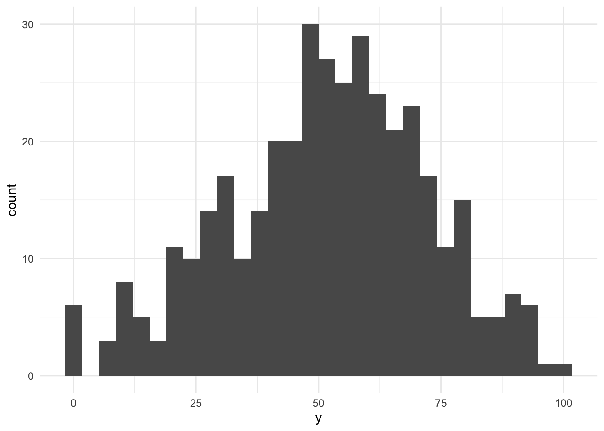
If more than about a third of tracts have low reliability, consider a different outcome, or one built from larger counts. Write your reasoning either way.
Answer (2–3 sentences): What is your outcome, why would an agency want to predict it, and how reliable is it?
Your answer: My outcome is the percent of owner-occupied housing units in a Philadelphia tract: B25003_002 / B25003_001, 2019–2023 ACS). City housing agencies could use these predictions to inform homeownership or home repair programs. It could also help to locate/flag tracts where ownership rates are unexpected; lower ownership rates in a previously high-ownership area might point to displacement.
The outcome variable is reliable, only 20 tracts are missing household information, which leaves 388 tracts for modeling. The median CV among these tracts is 11.2% (highly reliable per Jurjevich et al. 2018), and only 30 tracts, 20 of which are dropped for having 0 denominators, fall into the low reliability range.
Filter once, here, and never again. Every later step uses tracts.
tracts <- philly_tracts %>%
filter(total_popE > 0,
!is.na(y),
!is.na(med_inc),
!is.na(med_age),
!is.na(pct_single_fam),
!is.na(pct_vacant)
)
nrow(philly_tracts)[1] 408nrow(tracts)[1] 381# check for extra 7 drops
philly_tracts %>%
st_drop_geometry() %>%
filter(!GEOID %in% tracts$GEOID,
is.na(med_inc),
occ_unitsE > 0) %>%
select(NAME, total_popE, occ_unitsE) NAME total_popE occ_unitsE
1 Census Tract 165; Philadelphia County; Pennsylvania 2165 978
2 Census Tract 285; Philadelphia County; Pennsylvania 2625 1081
3 Census Tract 148; Philadelphia County; Pennsylvania 892 525
4 Census Tract 277; Philadelphia County; Pennsylvania 5489 2448
5 Census Tract 301; Philadelphia County; Pennsylvania 6446 2642
6 Census Tract 205; Philadelphia County; Pennsylvania 3383 1663
7 Census Tract 9802; Philadelphia County; Pennsylvania 396 13Answer: How many tracts did you lose, and what kinds of places are they?
Your answer: I lost 27 tracts here. 7 tracts were missing a median household income, while 20 had no households at all (likely around the airport, industrial zones, or parks).
Plot your outcome against each predictor before modeling (the Week 3 habit).
# one scatterplot per predictor, e.g.:
# ggplot(tracts, aes(x = ___, y = y)) + geom_point(alpha = 0.5) +
# geom_smooth(method = "lm", se = FALSE) + theme_minimal()
ggplot(tracts, aes(x = med_inc, y = y)) +
geom_point(alpha = 0.5) +
geom_smooth(method = "lm", se = FALSE) +
labs(x = "Median household income ($)", y = "% owner-occupied") +
theme_minimal()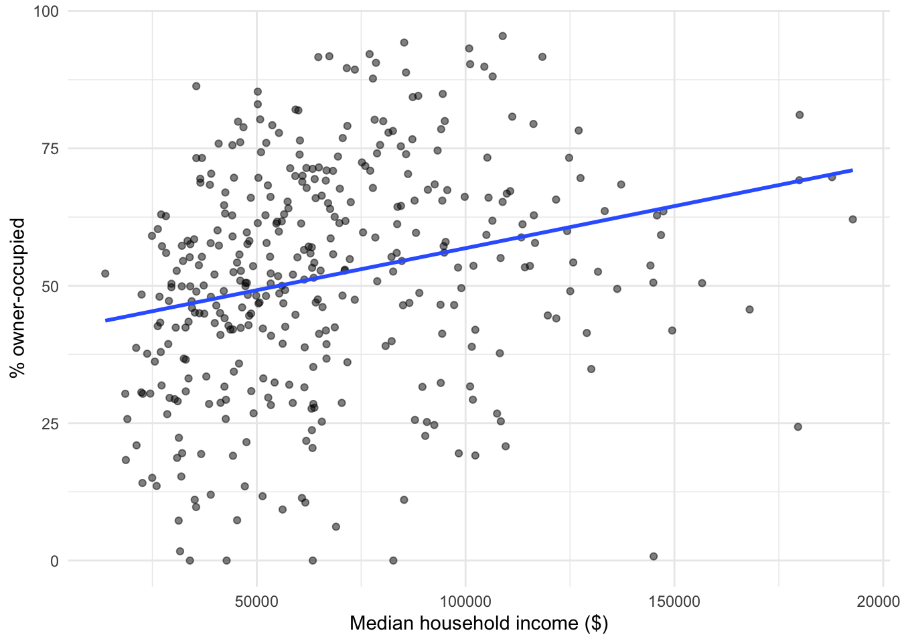
ggplot(tracts, aes(x = med_age, y = y)) +
geom_point(alpha = 0.5) +
geom_smooth(method = "lm", se = FALSE) +
labs(x = "Median age", y = "% owner-occupied") +
theme_minimal()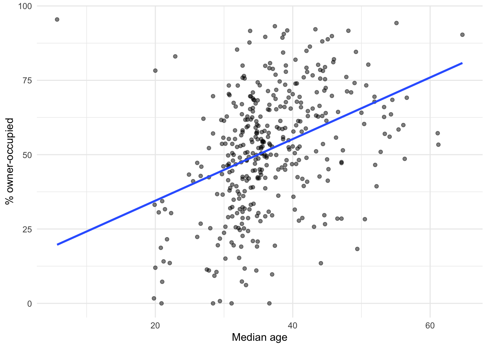
ggplot(tracts, aes(x = pct_single_fam, y = y)) +
geom_point(alpha = 0.5) +
geom_smooth(method = "lm", se = FALSE) +
labs(x = "% single-family homes", y = "% owner-occupied") +
theme_minimal()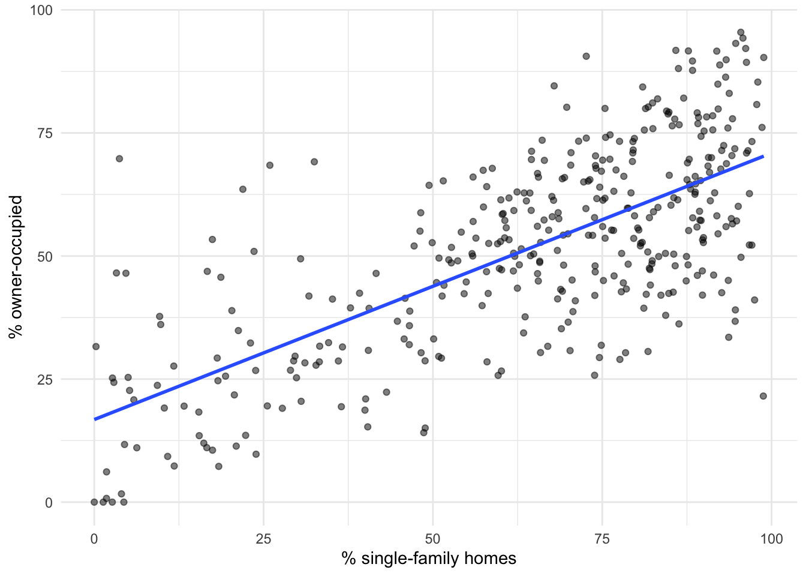
ggplot(tracts, aes(x = pct_vacant, y = y)) +
geom_point(alpha = 0.5) +
geom_smooth(method = "lm", se = FALSE) +
labs(x = "% vacant housing units", y = "% owner-occupied") +
theme_minimal()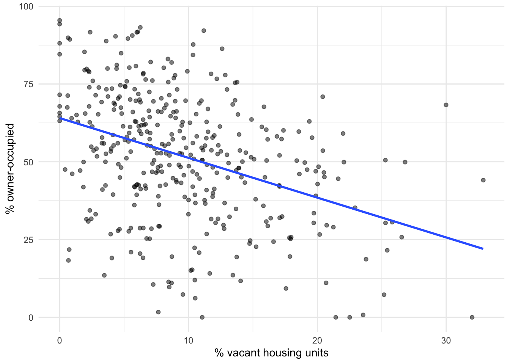
f1 <- y ~ med_inc + med_age + pct_single_fam + pct_vacant
m1 <- lm(f1, data = tracts)
#summary(m1)
#cv_rmse(f1, tracts)
model_log <- model_log %>%
add_row(model = "m1", added = "ACS baseline",
cv_rmse = cv_rmse(f1, tracts),
notes = "med inc, med age, pct single fam, pct vacant")
model_log# A tibble: 1 × 4
model added cv_rmse notes
<chr> <chr> <dbl> <chr>
1 m1 ACS baseline 10.4 med inc, med age, pct single fam, pct vacantOn tracts it hasn’t seen, the baseline model misses the actual owner-occupancy rate by about 10.41 percentage points.
Save this map. You’ll compare it to your final model’s map in Part 6.
tracts <- tracts %>% mutate(resid_m1 = residuals(m1))
ggplot(tracts) +
geom_sf(aes(fill = resid_m1), color = NA) +
scale_fill_gradient2(low = "#2166ac", mid = "grey95", high = "#b2182b", midpoint = 0) +
theme_void() +
labs(title = "Baseline model: where it's wrong",
subtitle = "Red = actual higher than predicted",
fill = "Residual")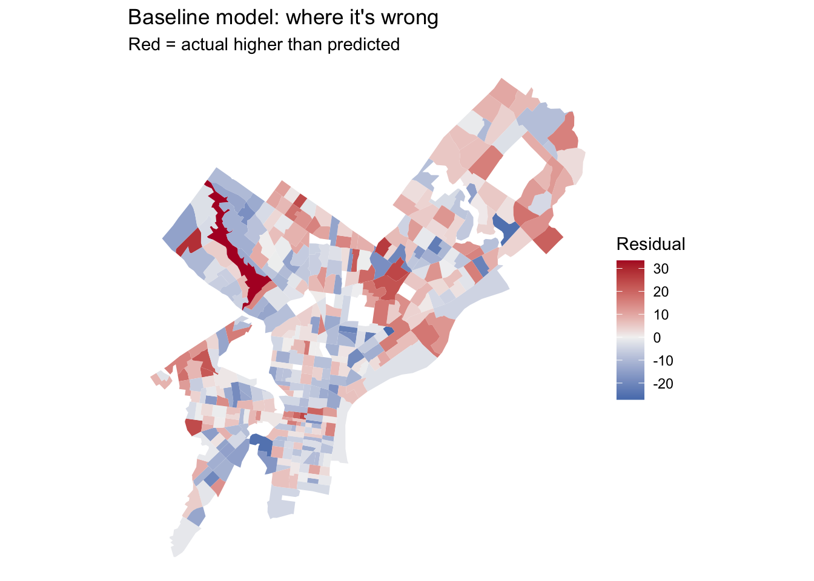
Answer: Where do the residuals cluster? What might those places have in common that your model doesn’t know about? Use this answer to choose your open data layers in Part 3.
Your answer: The residuals seem to be clustered mainly in North Philadelphia and on the far edge of West Philadelphia. The model tends to underpredict ownership rates in these areas. Some might be lower-income areas with higher ownership than expected. Ownership rates seem to be slightly overpredicted in other parts of West Philadelphia, like University City, in Southwest Philadelphia, and along North Broad St. Some of these errors might be due to high student populations (Penn, Drexel, Temple) which lead to higher-than-expected rates of renting/non-ownership.
Many of the city’s datasets on OpenDataPhilly are served through a Carto SQL API. You send a SQL query in a URL, and it sends back data. Ask for format=GeoJSON and st_read() reads the result directly, just like the Indego feed in Week 4.
The pattern:
https://phl.carto.com/api/v2/sql?format=GeoJSON&q=SELECT ... FROM table_name WHERE ...Three pieces of SQL are all you need:
SELECT the_geom, column1, column2 chooses which columns come back. Always include the_geom, or you get no geometry.FROM table_name chooses the dataset.WHERE ... filters rows. Filter in the query, not in R. Some tables have millions of rows, and pulling everything will be slow or fail.This helper builds the URL for you. Spaces and symbols in a URL need encoding, and URLencode() handles that.
carto_get <- function(sql) {
url <- paste0("https://phl.carto.com/api/v2/sql?format=GeoJSON&q=", URLencode(sql))
st_read(url, quiet = TRUE)
}Pull at least two layers that you think relate to your outcome. Base your choice on your Part 2C answer.
#read_csv(url)
# housing deed transfers: turnover counts could help add more info for tracts that throw off the model
deeds <- carto_get(
"
SELECT the_geom, display_date, document_type
FROM rtt_summary
WHERE display_date < '2024-01-01'
AND display_date >= '2021-01-01'
AND document_type = 'DEED'
AND the_geom IS NOT NULL
") %>%
st_transform(st_crs(tracts))
# new building permits count per tract: new construction might be apt building investment
permits <- carto_get(
"
SELECT the_geom, permitissuedate, permittype, commercialorresidential, numberofunits
FROM permits
WHERE permitissuedate < '2024-01-01'
AND permitissuedate >= '2021-01-01'
AND typeofwork = 'New Construction'
AND permittype IN ('Residential Building', 'Building')
AND the_geom IS NOT NULL
") %>%
st_transform(st_crs(tracts))
# college/univ geographies
colleges <- st_read("https://hub.arcgis.com/api/v3/datasets/8ad76bc179cf44bd9b1c23d6f66f57d1_0/downloads/data?format=geojson&spatialRefId=4326&where=1%3D1") %>%
st_transform(st_crs(tracts))
names(colleges)
nrow(colleges)
#head(colleges)# at building levelAnswer: Why these layers? What do you expect them to capture that the ACS variables don’t?
Your answer: I chose three layers – deed transfers per 100 housing units, residential/commercial construction permits per 100 housing units, and distance to nearest college or university building – based on where the residuals were concentrated. The ACS predictors describe the people living in a tract, but these layers might point at how the housing within it is changing or how it’s used. Deed transfers could measure housing turnover, with frequent sales reflecting investment and low turnover reflecting longtime ownership. New construction permits signal recent development which could point to growing rentership. University buildings should mark where student populations are grouped, signaling lower rates of owner occupancy. These may all help in areas where the model misses.
Build at least three spatial features from your own layers, and use at least two types (count, density, nearest distance, distance to a place). After each one, fit a model, cross-validate it, and log it.
tract_pts <- st_point_on_surface(tracts)
# DEED TRANSFERS
# density per 100 housing units per tract
tracts <- tracts %>%
# count number of transfers in tract
mutate(n_transfers = lengths(st_intersects(., deeds)),
# density of transfers per 100 housing units in tract
# how often does the avg house in this tract change ownership
transfers_100 = n_transfers / units_vac_totalE * 100)
#summary(tracts$transfers_100)
f2 <- y ~ med_inc + med_age + pct_single_fam + pct_vacant +
transfers_100
#summary(lm(f2, data = tracts))
model_log <- model_log %>%
add_row(model = "m2", added = "transfers_100",
cv_rmse = cv_rmse(f2, tracts),
notes = "baseline + deed transfer density per 100 housing units")
# repeat for each feature
model_log# A tibble: 2 × 4
model added cv_rmse notes
<chr> <chr> <dbl> <chr>
1 m1 ACS baseline 10.4 med inc, med age, pct single fam, pct vacant
2 m2 transfers_100 10.4 baseline + deed transfer density per 100 housing …# NEW BUILDING PERMITS
# density per 100 housing units per tract
# join each permit to its associated tract. count up number of units
# since some permits contain 100 units (big apts) and others just 1 (single fam)
units_per_tract <- permits %>%
st_join(tracts %>% select(GEOID)) %>%
st_drop_geometry() %>%
group_by(GEOID) %>%
summarise(new_units = sum(numberofunits, na.rm = TRUE))
tracts <- tracts %>%
# l join - keep all tracts even if no permits there
left_join(units_per_tract, by = "GEOID") %>%
mutate(
new_units = replace_na(new_units, 0),
new_units_100 = new_units / units_vac_totalE * 100
)
#summary(tracts$new_units_100)
f3 <- y ~ med_inc + med_age + pct_single_fam + pct_vacant +
transfers_100 + new_units_100
#summary(lm(f3, data = tracts))
model_log <- model_log %>%
add_row(model = "m3", added = "new_units_100",
cv_rmse = cv_rmse(f3, tracts),
notes = "baseline + transfers + permit density per 100 units ")
# repeat for each feature
model_log# A tibble: 3 × 4
model added cv_rmse notes
<chr> <chr> <dbl> <chr>
1 m1 ACS baseline 10.4 "med inc, med age, pct single fam, pct vacant"
2 m2 transfers_100 10.4 "baseline + deed transfer density per 100 housing…
3 m3 new_units_100 10.4 "baseline + transfers + permit density per 100 un…# NEAREST COLLEGE/UNIVERSITY BUILDING
# distance in miles
# reduce to schools most likely to be relevant
schools_to_keep <- st_drop_geometry(colleges)
schools_to_keep <- schools_to_keep %>%
count(university_name, sort = TRUE)
#schools_to_keep
# drop smallest schools / likely commuter schools
schools_to_keep <- schools_to_keep %>% head(9) %>% select(university_name)
#schools_to_keep
colleges_reduced <- colleges %>%
filter(university_name %in% schools_to_keep$university_name)
# find closest border of college campus/building
nearest_coll <- st_nearest_feature(tract_pts, colleges_reduced)
tracts <- tracts %>%
# closest college building in miles
mutate(dist_college_mi =
as.numeric(st_distance(tract_pts,
colleges_reduced[nearest_coll, ],
by_element = TRUE)) / 5280)
f4 <- y ~ med_inc + med_age + pct_single_fam + pct_vacant +
transfers_100 + new_units_100 + dist_college_mi
#summary(lm(f4, data = tracts))
model_log <- model_log %>%
add_row(model = "m4", added = "dist_college_mi",
cv_rmse = cv_rmse(f4, tracts),
notes = "baseline + transfers + permits + nearest college (mi)")
# repeat for each feature
model_log# A tibble: 4 × 4
model added cv_rmse notes
<chr> <chr> <dbl> <chr>
1 m1 ACS baseline 10.4 "med inc, med age, pct single fam, pct vacant"
2 m2 transfers_100 10.4 "baseline + deed transfer density per 100 housi…
3 m3 new_units_100 10.4 "baseline + transfers + permit density per 100 …
4 m4 dist_college_mi 10.4 "baseline + transfers + permits + nearest colle…Answer: Which spatial feature helped most? Did any feature you expected to help do nothing, or make CV RMSE worse? Why might that be?
Your answer: New residential unit permits per 100 housing units, new_units_100, helped the most; it was the only spatial feature that (very slightly) lowered CV RMSE and reached significance at the 95% level (in model 3 only). It had a negative effect on owner occupancy rate, as expected – we expect tracts with more new construction (often rental apartment buildings) to have lower owner-occupancy rates on average.
I expected deed transfers per 100 housing units (transfers_100) to help, but it made CV RMSE slightly worse, the coefficient was insignificant throughout, and it shrank a lot once new_units_100 was added. This might be because the two variables are related; either way, new_units_100 gave a stronger signal.
Adding proximity to college/university buildings also had almost no effect on the model. The nearest distance in miles, dist_college_mi did not show significant effects on the outcome or affect CV RMSE.
Try at least one of each: a log, a squared term, and a categorical variable. Choose which variables to transform based on your plots, not at random. Log each model.
# median income
ggplot(tracts, aes(x = med_inc)) + geom_histogram(bins = 30) + theme_minimal()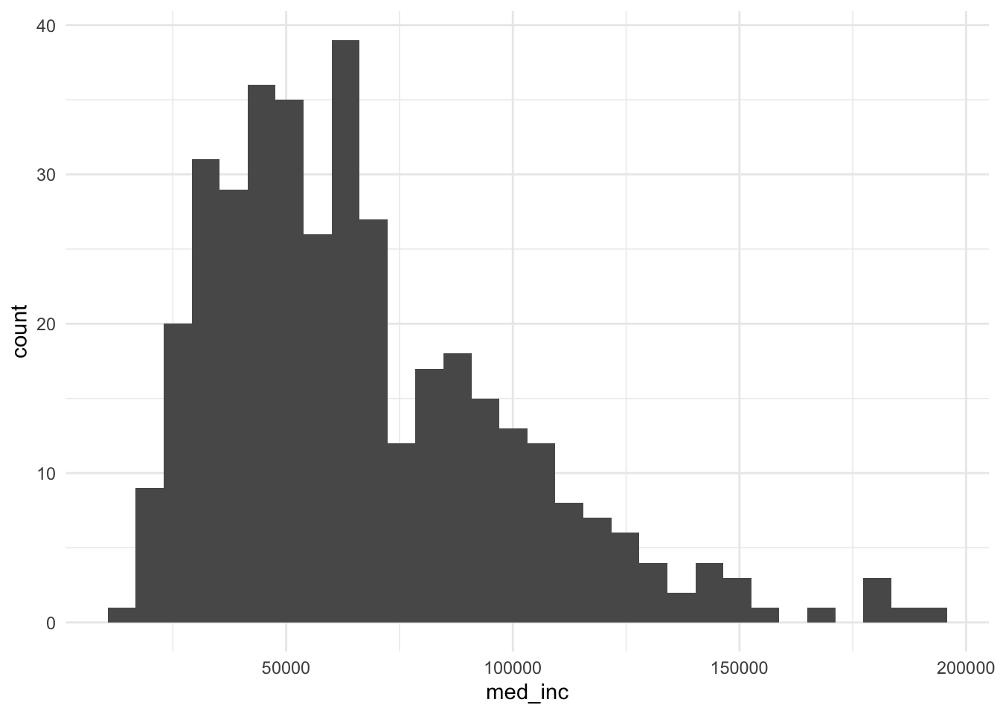
ggplot(tracts, aes(x = log(med_inc))) + geom_histogram(bins = 30) + theme_minimal()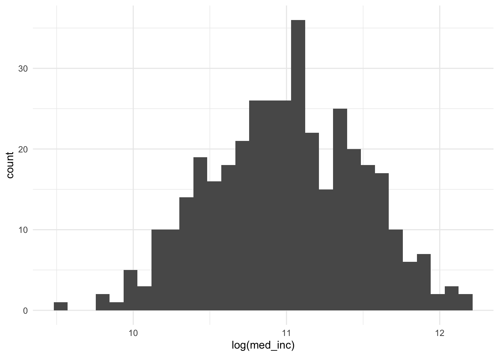
# right skewed w / a long tail. after log symmetric
# new units
ggplot(tracts, aes(x = new_units_100)) + geom_histogram(bins = 30) + theme_minimal()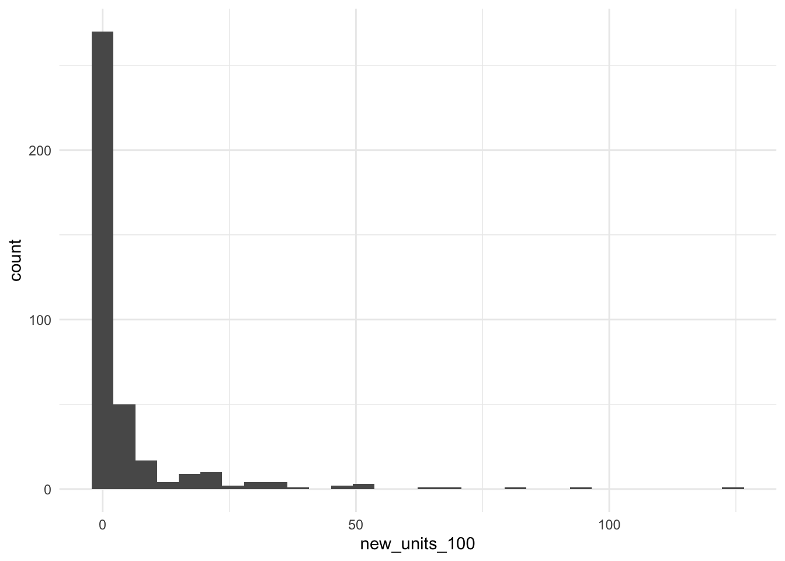
ggplot(tracts, aes(x = log1p(new_units_100))) + geom_histogram(bins = 30) + theme_minimal()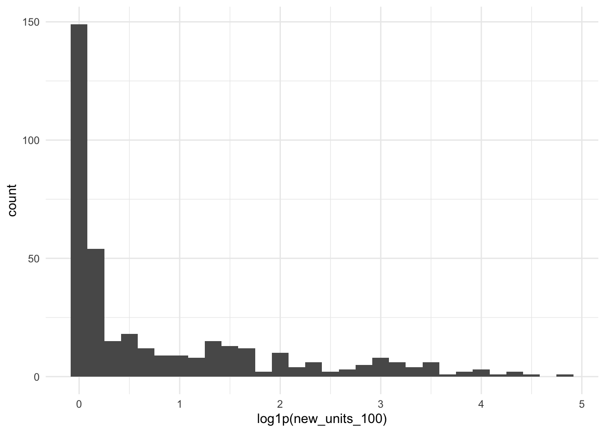
# extremely skewed + conc around 0.
# log doesn't help much
# distance to college
ggplot(tracts, aes(x = dist_college_mi)) + geom_histogram(bins = 30) + theme_minimal()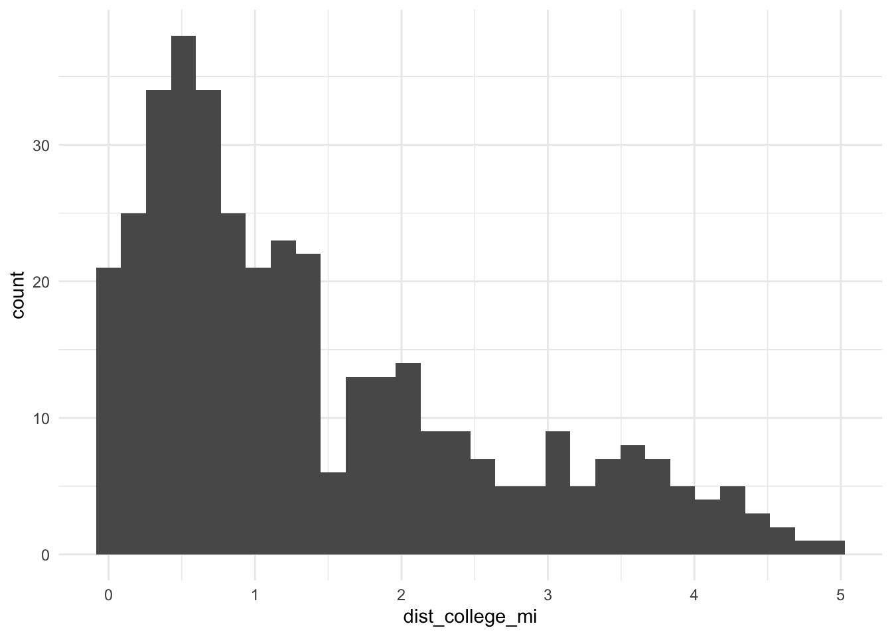
ggplot(tracts, aes(x = log1p(dist_college_mi))) + geom_histogram(bins = 30) + theme_minimal()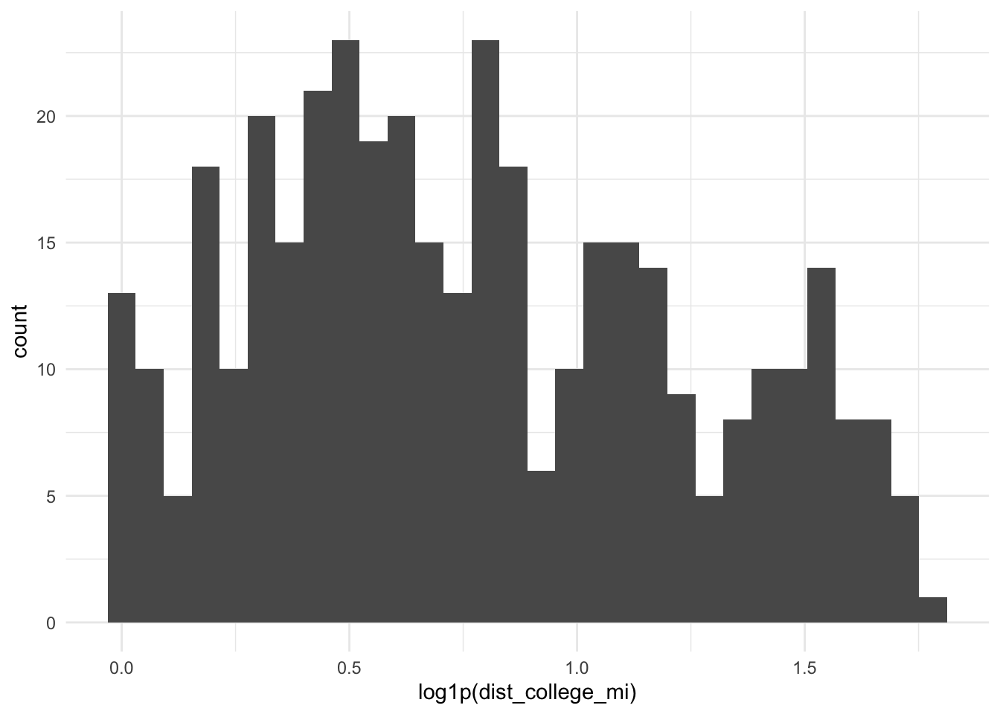
# skewed. some improvement from log but not perfect. seems like there are moddal groupings in dist
ggplot(tracts, aes(x = dist_college_mi, y = y)) +
geom_point(alpha = 0.4) +
geom_smooth(se = FALSE,
color = "red") +
theme_minimal()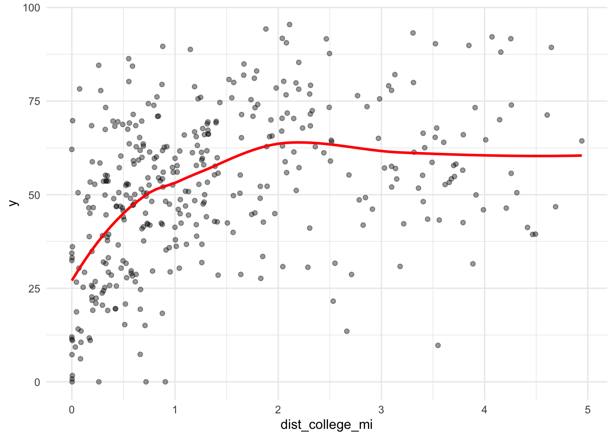
# categorizing at cutoff points would make sense here
# half mile, 1.5 miles, +
# vacancy
ggplot(tracts, aes(x = pct_vacant)) + geom_histogram(bins = 30) + theme_minimal()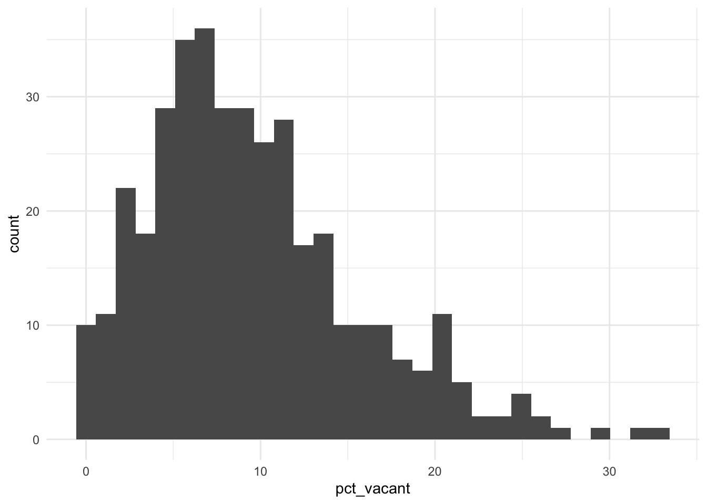
ggplot(tracts, aes(x = log1p(pct_vacant))) + geom_histogram(bins = 30) + theme_minimal()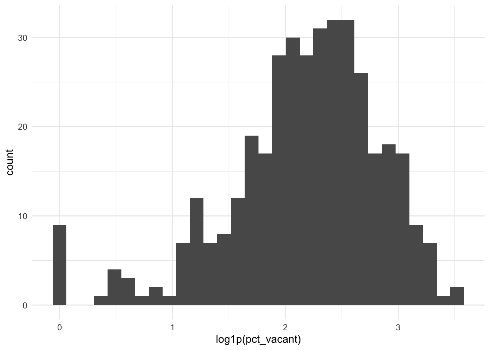
# mild skew. log just reversed it - skewed in other direction. will leave alone
# squared candidates
ggplot(tracts, aes(x = med_age, y = y)) +
geom_point(alpha = 0.4) +
geom_smooth(method = "lm",
formula = y ~ x + I(x^2),
se = FALSE,
color = "red") +
labs(x = "med_age", y = "% owner occupied") +
theme_minimal()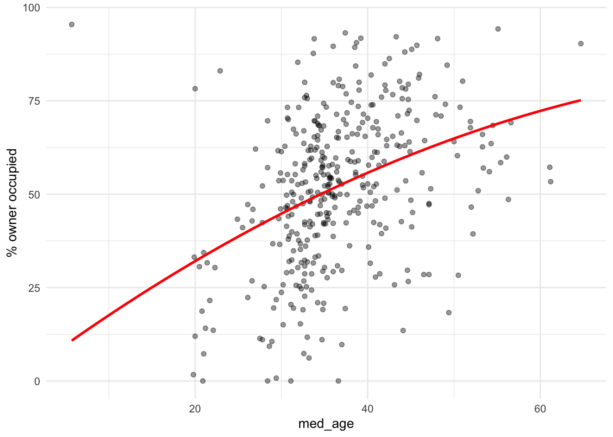
ggplot(tracts, aes(x = pct_vacant, y = y)) +
geom_point(alpha = 0.4) +
geom_smooth(method = "lm",
formula = y ~ x + I(x^2),
se = FALSE,
color = "red") +
labs(x = "% vacant", y = "% owner occupied") +
theme_minimal()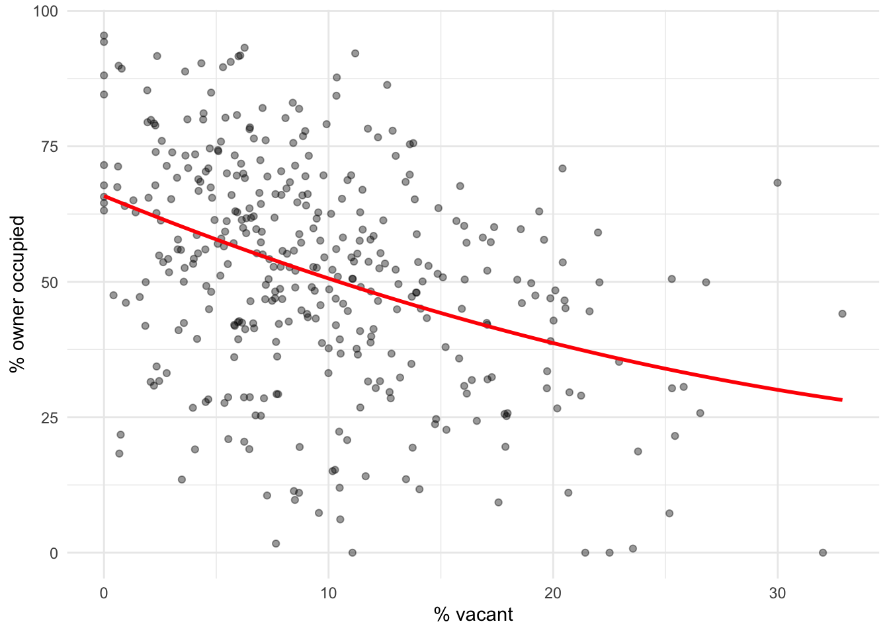
ggplot(tracts, aes(x = pct_single_fam, y = y)) +
geom_point(alpha = 0.4) +
geom_smooth(method = "lm",
formula = y ~ x + I(x^2),
se = FALSE,
color = "red") +
labs(x = "% single family units", y = "% owner occupied") +
theme_minimal()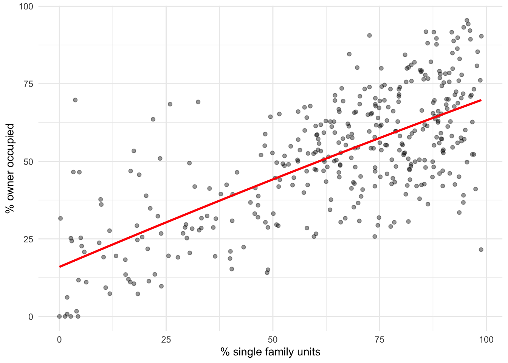
# LOG: median income
f_log_inc <- y ~ log(med_inc) + med_age + pct_single_fam + pct_vacant +
transfers_100 + new_units_100 + dist_college_mi
model_log <- model_log %>%
add_row(model = "m5", added = "log of med_inc",
cv_rmse = cv_rmse(f_log_inc, tracts),
notes = "log transformation")
# SQUARED: median age
f_sq_age <- y ~ med_inc + med_age + I(med_age^2) + pct_single_fam + pct_vacant +
transfers_100 + new_units_100 + dist_college_mi
model_log <- model_log %>%
add_row(model = "m6", added = "med_age squared",
cv_rmse = cv_rmse(f_sq_age, tracts),
notes = "squared transformation")
# CATEGORICAL: no/some/a lot of new construction
tracts <- tracts %>%
mutate(
new_construction = case_when(
new_units_100 == 0 ~ "No new construction",
new_units_100 < 5 ~ "Moderate construction",
TRUE ~ "High construction"
),
new_construction = factor(new_construction,
levels = c("No new construction",
"Moderate construction",
"High construction"))
)
tracts %>% st_drop_geometry() %>% count(new_construction) new_construction n
1 No new construction 115
2 Moderate construction 199
3 High construction 67f_cat_construction <- y ~ med_inc + med_age + pct_single_fam + pct_vacant +
transfers_100 + new_construction + dist_college_mi
#summary(lm(f_cat_construction, tracts))
model_log <- model_log %>%
add_row(model = "m7", added = "new_construction",
cv_rmse = cv_rmse(f_cat_construction, tracts),
notes = "categorical transformation")
# CAATEGORICAL: college close/mid/far
tracts <- tracts %>%
mutate(
college_nearby = case_when(
dist_college_mi < 0.5 ~ "Near",
dist_college_mi < 2 ~ "Middle",
TRUE ~ "Far"
),
college_nearby = factor(college_nearby,
levels = c("Far", "Middle", "Near"))
)
tracts %>% st_drop_geometry() %>% count(college_nearby) college_nearby n
1 Far 104
2 Middle 182
3 Near 95f_cat_college_nearby <- y ~ med_inc + med_age + pct_single_fam + pct_vacant +
transfers_100 + new_units_100 + college_nearby
#summary(lm(f_cat_college_nearby, tracts))
model_log <- model_log %>%
add_row(model = "m8", added = "college_nearby",
cv_rmse = cv_rmse(f_cat_college_nearby, tracts),
notes = "categorical transformation")
model_log# A tibble: 8 × 4
model added cv_rmse notes
<chr> <chr> <dbl> <chr>
1 m1 ACS baseline 10.4 "med inc, med age, pct single fam, pct vacant"
2 m2 transfers_100 10.4 "baseline + deed transfer density per 100 hous…
3 m3 new_units_100 10.4 "baseline + transfers + permit density per 100…
4 m4 dist_college_mi 10.4 "baseline + transfers + permits + nearest coll…
5 m5 log of med_inc 10.2 "log transformation"
6 m6 med_age squared 10.4 "squared transformation"
7 m7 new_construction 10.3 "categorical transformation"
8 m8 college_nearby 10.3 "categorical transformation" Answer: Which transformation helped most? For your categorical variable, write one sentence reading one of its coefficients correctly, naming the reference level.
Your answer: log(med_inc) helped most; it cut CV RMSE about 2.5 times as much as any other addition/transformation. The log captures income’s relationship with ownership better than a straight line, since it rises quickly and then flattens out.
Holding the other predictors constant, tracts with high levels of new construction (>=5 permitted units per 100 units in the tract) have about 5.9 percentage points lower owner-occupancy than reference-level tracts with no new construction.
Combine the features and transformations that earned their place, judged by CV RMSE, not p-values.
f_final <- y ~ log(med_inc) + med_age + pct_single_fam + pct_vacant +
new_construction + college_nearby
m_final <- lm(f_final, data = tracts)
#summary(m_final)
model_log <- model_log %>%
add_row(model = "final", added = "log(med_inc), new_construction, college_nearby",
cv_rmse = cv_rmse(f_final, tracts),
notes = "final model w/ log med inc + 2 categorical variables")
model_log# A tibble: 9 × 4
model added cv_rmse notes
<chr> <chr> <dbl> <chr>
1 m1 ACS baseline 10.4 "med inc, med ag…
2 m2 transfers_100 10.4 "baseline + deed…
3 m3 new_units_100 10.4 "baseline + tran…
4 m4 dist_college_mi 10.4 "baseline + tran…
5 m5 log of med_inc 10.2 "log transformat…
6 m6 med_age squared 10.4 "squared transfo…
7 m7 new_construction 10.3 "categorical tra…
8 m8 college_nearby 10.3 "categorical tra…
9 final log(med_inc), new_construction, college_nearby 10.0 "final model w/ …tracts <- tracts %>% mutate(resid_final = residuals(m_final))
ggplot(tracts) +
geom_sf(aes(fill = resid_m1), color = NA) +
scale_fill_gradient2(low = "#2166ac", mid = "grey95", high = "#b2182b", midpoint = 0) +
theme_void() +
labs(title = "First model: where it's wrong",
subtitle = "Red = actual higher than predicted",
fill = "Residual")ggplot(tracts) +
geom_sf(aes(fill = resid_final), color = NA) +
scale_fill_gradient2(low = "#2166ac", mid = "grey95", high = "#b2182b", midpoint = 0) +
theme_void() +
labs(title = "Final model: where it's wrong",
subtitle = "Red = actual higher than predicted",
fill = "Residual")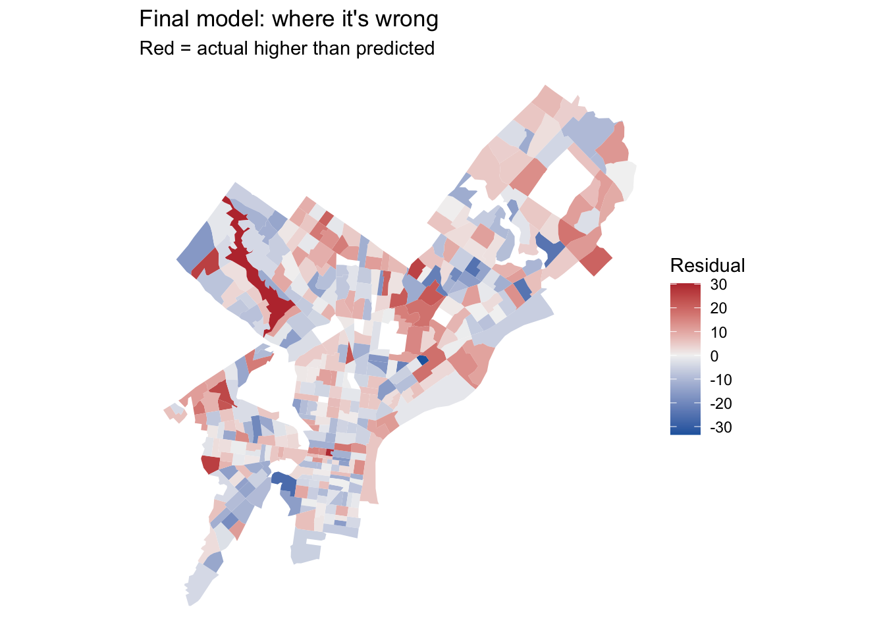
Put your two residual maps side by side, or put them next to each other in the rendered document. Did the clusters from Part 2C shrink? Where did they stay?
The maps look extremely similar; the improvement on CV RMSE in the final model was spread pretty evenly across a lot of tracts, so the errors look roughly the same on the map. Red clusters remain in parts of North, Northwest, and West Philadelphia. The model underpredicts ownership here; it may be the case that these are lower-income neighborhoods with high levels of home ownership which throws the model off. The blue clusters also still show up in Southwest and parts of the Northeast. The model overpredicts ownership here; there might be other variables/layers which could help explain the relationship that I didn’t capture.
ggplot(tracts, aes(x = y_cv, y = abs(resid_final))) +
geom_point(alpha = 0.5) +
geom_smooth(se = FALSE) +
labs(x = "CV of your outcome estimate (%)", y = "Size of the miss") +
theme_minimal()
# Beta
coef(m_final)["pct_single_fam"]pct_single_fam
0.5659078 # y hat
tracts[58,] %>%
st_drop_geometry() %>%
select(NAME, y) %>%
mutate(y_hat = predict(m_final, tracts[58,])) NAME y y_hat
58 Census Tract 263.02; Philadelphia County; Pennsylvania 70.94179 72.33081Answer in prose, drawing on your model log (incorporate our words of the day for bonus points. just kidding):
Your answer:
Logging median household income lowered CV RMSE the most, because income’s relationship with ownership rises sharply at low incomes and then flattens out. A straight line can’t fit that relationship well, but log does. The biggest disappointment was deed transfers per 100 housing units; I expected this to be. a strong predictor but it actually worsened CV RMSE. I thought it would capture home/residential turnover in neighborhoods (e.g., no deed transfers might point to a tract with long-term owners and a high owner-occupancy rate). But once I added a layer for new construction, its coefficient shrank by almost 3/4; construction was a stronger signal.
Holding the other predictors constant, each additional percentage point of single family homes in a tract is associated with about a 0,.57 percentage point increase in owner occupancy. The model predicts 72.3% owner occupancy for Census Tract 263.02, where the actual rate is 70.9%.
There are still large blue pockets in Southwest Philadelphia where the model overpredicts ownership. I wonder if collecting data about subsidized or public housing would help improve predictions here. OpenDataPhilly has a PHA Housing Sites map which I couldn’t pull data from, but they also havr an Affordable Housing Production dataset which might have helped.
My model does the worst in tracts where the outcome is actually measured very well (CV under 25%), and the largest residual appears to be in a tract with a CV ~5%, so sampling noise can’t be the main explanation for these errors. The few tracts with high CV only show moderate residuals. Most of the remaining error seems to come from other variables outside the model rather than uncertainty in the existing data.